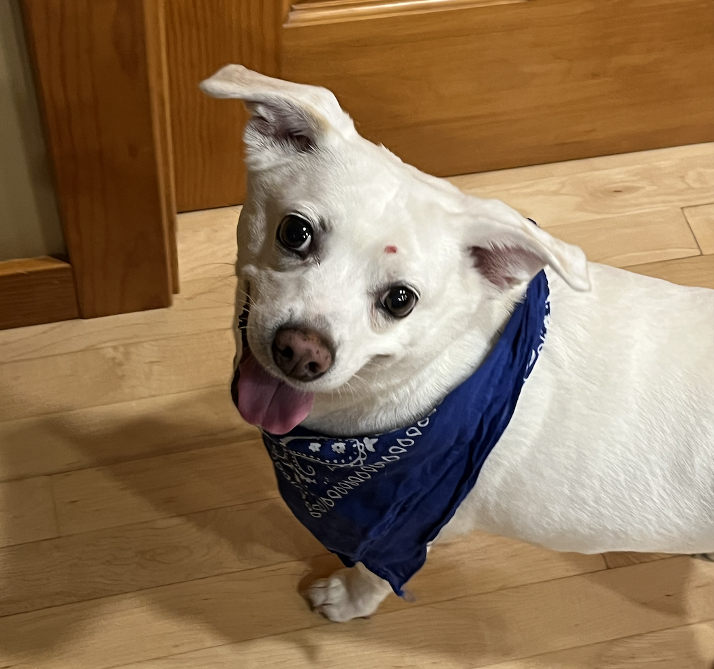

I was captain of the team my junior year and I have so many fond memories of the team. My dad and
both my sisters were swimmers as well, so it was a big part of your lives growing up. Even though
I don't swim as much anymore, it will always have a special place in my heart. This is a picture of
me swimming butterfly, which was my best stroke.

This is my dog, Cooper. He is a rat terrier mix and we adopted him from an adoption day event when
he was 3 years old. He loves going for walks, being chased, laying in the sun, and sleeping.
I have always loved working out, and weight lifting is one of my favorite hobbies. I lift with
my roommates during the school year and with high school friends during the summer. This is a (really
low quality) picture of me dead-lifting 335lbs.